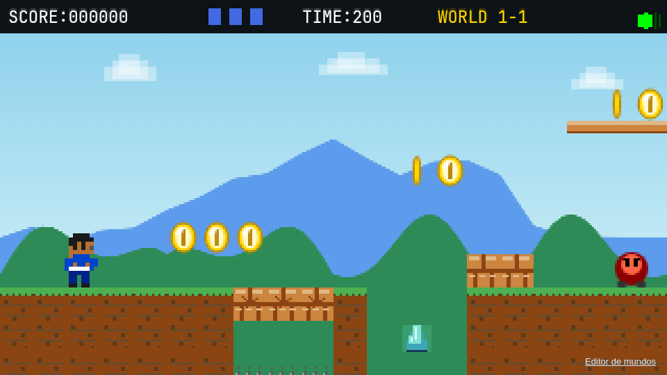
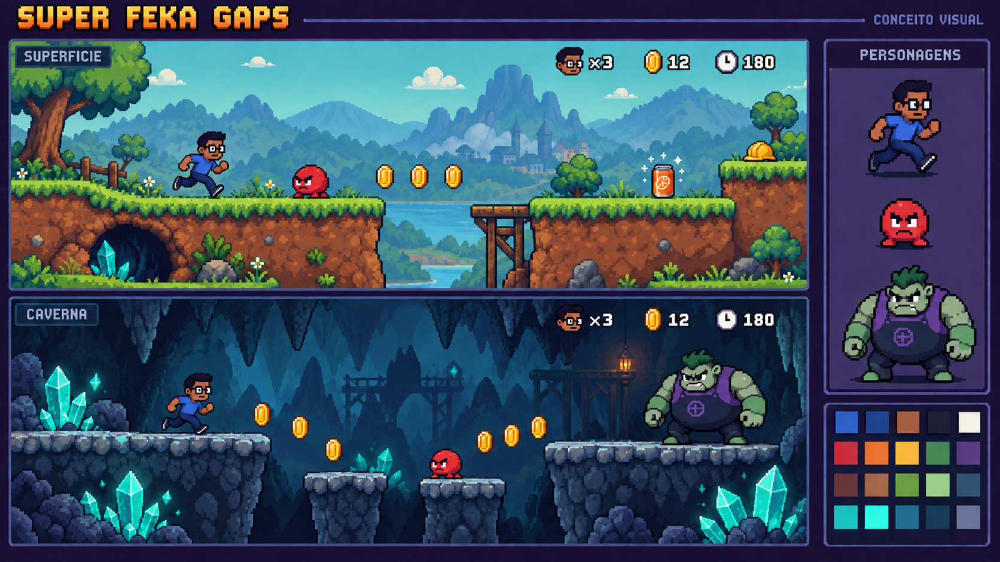

Diagnóstico + direção de arte
Mais personalidade.
O mesmo mundo, mais cuidado.
A base técnica já permite um belo jogo em pixel art. O próximo salto está na unidade entre personagens, materiais, cenários, animações e interface.
01 / O que o jogo mostra hoje
Várias linguagens na mesma tela
Capturas do projeto atual, sem retoque. As cenas avançadas foram montadas com o renderizador existente e estados controlados em memória; não são uma partida completa.

Uma grade de pixel
Feka em matriz 8×13 ampliada 2×, inimigos geométricos e textos em alta resolução. A escala de detalhe muda de objeto para objeto.
Um elenco coeso
Redesenhar Feka, minion, Joãozão e Yasmin com a mesma luz, contorno e proporções. Dar poses próprias a cada ação.
Um mundo legível
Bordas de terreno bem desenhadas, menos repetição e fundos mais suaves. Separar visualmente chão, decoração, perigo e recompensa.
02 / Proposta de direção
Aventura cômica, cor e profundidade
Preservar os óculos e o azul do Feka, a Mini Fanta, o humor e os cristais. Explorar terra quente, vegetação moderada e subsolo frio, com personagens mais expressivos.

03 / Regras que mantêm a identidade
Um pequeno sistema de arte
Pixel de 1×1
Redesenhar o Feka em aproximadamente 16×26 pixels reais. Preservar inicialmente a hitbox e a posição dos pés.
Luz compartilhada
Luz superior esquerda, três tons por material e contorno escuro colorido nos elementos importantes.
Textura com propósito
Formas maiores e poucos detalhes bem colocados. Bordas, cantos e variações conectam os tiles em um terreno contínuo.
Fundos mais calmos
Contraste menor ao longe. Cristais distantes discretos; plataformas, moedas e inimigos aparecem primeiro.
Animação expressiva
Quatro a seis desenhos de movimento, salto e queda distintos, antecipação e impacto para a sentada.
Interface em família
Fonte bitmap com acentos, retrato com contador de vidas, itens em áreas reservadas e telas com o mesmo acabamento.
#1B1F3B#3D6FBE#4D8A62#99614D#E6AC4E#50B9AD#8B4D85#C9575104 / Ordem de melhoria
Concluir um conjunto antes de expandir
| Etapa | Entregar | Critério de qualidade |
|---|---|---|
| 01 · Base | Grade, paleta e HUD Unificar cores e corrigir sobreposição de vidas/itens. | Escala definida e informações legíveis com ambos os power-ups. |
| 02 · Trecho | Feka + minion + terreno + fundo Um trecho inicial com os principais elementos redesenhados. | Tudo pertence ao mesmo mundo em 1×, 3× e em movimento. |
| 03 · Subsolo | Transição, rocha e cristais Reforçar profundidade e clareza de plataformas. | Chão, cenário e itens são distinguidos imediatamente. |
| 04 · Expansão | Boss, Yasmin e outros biomas Aplicar a direção já validada a todo o conteúdo. | Cada ambiente é próprio; o elenco mantém a mesma linguagem. |
| 05 · Polimento | Título, final, efeitos e animações Completar a apresentação do jogo. | As telas e respostas visuais reforçam a identidade. |
Primeira implementação recomendada
20–30 segundos
muito bem resolvidos.
Usar o início de WORLD 1-1 e a descida à caverna como referência jogável. Manter a engine e as regras atuais enquanto personagem, inimigo, cenário, itens e HUD recebem o novo acabamento. Esse trecho orienta a produção do restante do jogo.